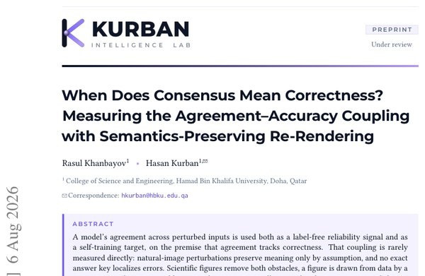

When Does Consensus Mean Correctness? Measuring the Agreement–Accuracy Coupling with Semantics-Preserving Re-Rendering

In one sentence. Uses programmatically re-rendered scientific figures to measure when a vision-language model's agreement across equivalent inputs actually tracks correctness, and shows that fine-tuning on self-consensus lowers accuracy.
Abstract
A model's agreement across perturbed inputs is used both as a label-free reliability signal and as a self-training target, on the premise that agreement tracks correctness. That coupling is rarely measured directly: natural-image perturbations preserve meaning only by assumption, and no exact answer key localizes errors. Scientific figures remove both obstacles, a figure is drawn from data by a program, so redrawing it yields images that are semantically equivalent by construction and share a programmatically exact answer. We build RENDEQ, a generator of such render-equivalence sets, and measure the coupling on three open-weight VLMs, checking every finding across three independent instantiations. Re-rendering beats resampling on both accuracy and reliability. Agreement beats an evidence-carrying baseline, mean token log-probability, on two of three models and ties on the third, reversing an intermediate, buggy replication traced to a rendering-pipeline failure. The dispersion behind this is concentrated in one style factor, the plotting library, more than double the next-largest factor and an order of magnitude above the noise floor. Fine-tuning on the model's own cross-render consensus inverts: accuracy falls in every one of five replication runs, the opposite sign to published results on natural images. Agreement certifies correctness only above a threshold set by how diffuse a model's errors are, and an objective that rewards agreement destroys exactly that diffuseness.
BibTeX
@inproceedings{khanbayov2027when,
title = {When Does Consensus Mean Correctness? Measuring the Agreement–Accuracy Coupling with Semantics-Preserving Re-Rendering},
author = {Khanbayov, Rasul and Kurban, Hasan},
booktitle = {Findings of the Association for Computational Linguistics: EACL 2027},
year = {2027}
}